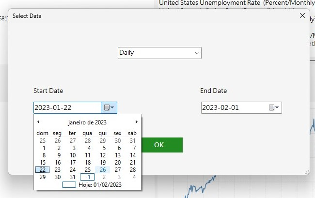
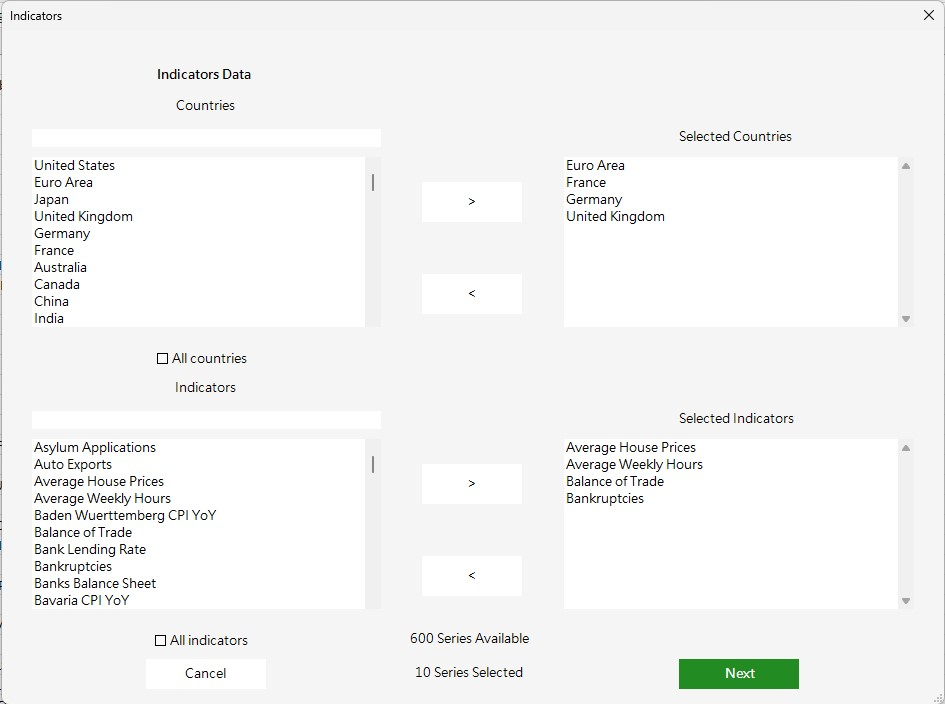
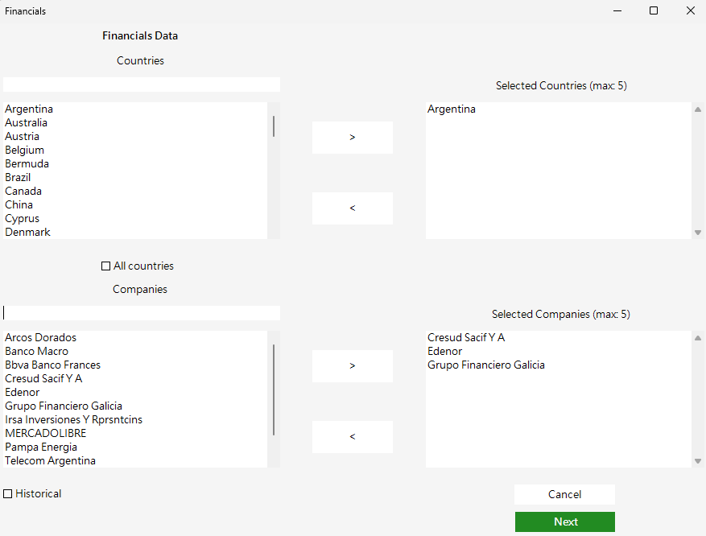
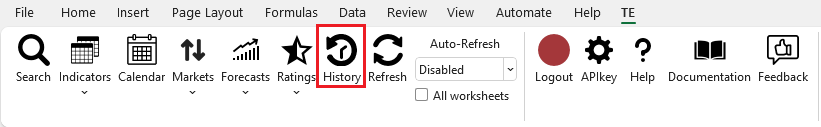
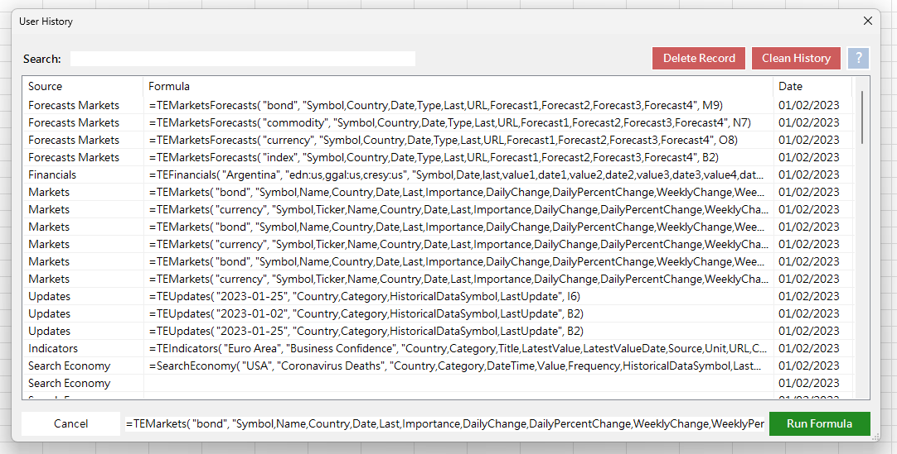
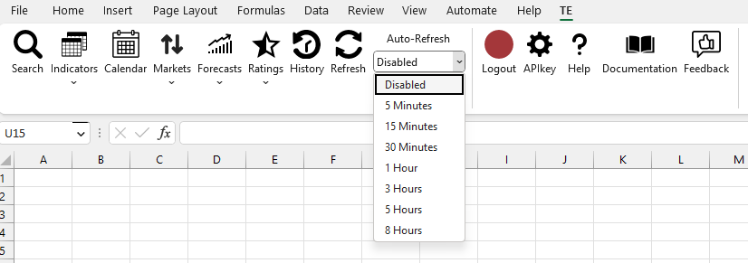
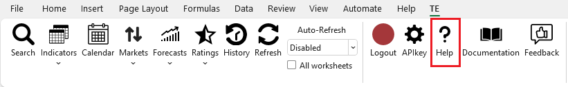
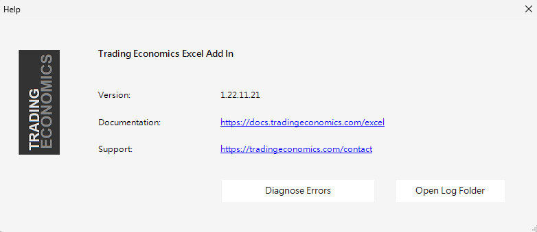
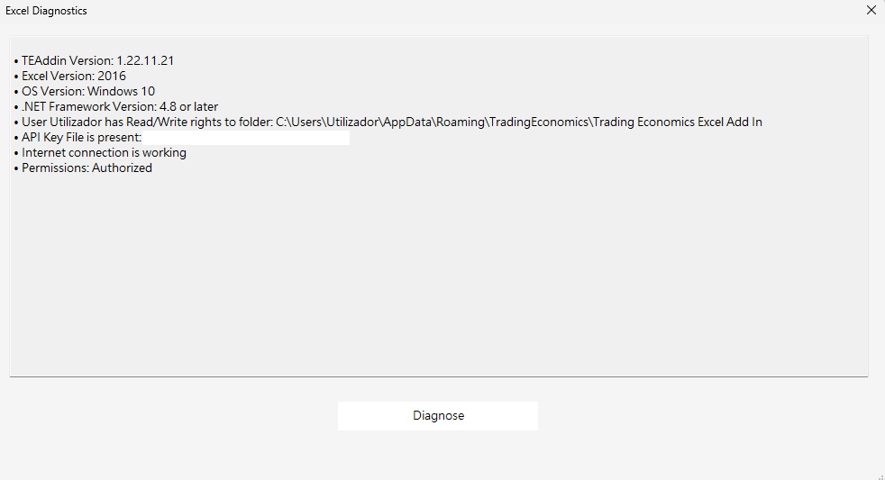

GitHub API Documentation Pypi npm Tableau Matlab Docker Chainlink
API Status API ChangeLog Support


The Trading Economics Excel Add-In connects Excel to our API which provides direct access to 300.000 economic indicators, exchange rates, stock market indexes, government bond yields and commodity prices. It allows you to download millions of rows of historical data, to query our real-time economic calendar and to subscribe to updates.
The Trading Economics Excel Add-In installer can be downloaded here: Download
TE Excel Add-In.
Requirements: Microsoft Windows with Excel 2010, 2013 or 2016 and Office 365.
Note: If Windows shows a warning just click on "More info" and then install.
After installing the Add-In, open Excel, click on TE tab, then click on the login. The first time you
use this software you will be logged as "guest:guest" with limited access to our data.
To overcome this limitations you need to get an API key and paste it on the "APIkey" menu (more info at
API Key in this Docs).
Please subscribe to one of our
plans if you do not have a key yet.

By default, the first time you use this Add-In, you will be logged as "guest:guest" with limited access to our data.

To overcome this limitations you need to get an API key and paste it in this menu.
After changing the
ApiKey, is necessary to Save Changes and do Logout/Login to refresh the permissions.


Search gives direct access to all the TE API indicators.
You can look for countries, bonds, currencies, stocks and much more. It's also possible choose from which source/data type you want to get data from.

In some cases after selecting the indicator, there is some options to manipulate the wanted result.

The Indicators method has the following options:
- Latest: Get the latest datapoint/snapshot for one or more countries and indicators
- Historical: Gets data for one or more countries and indicators for a period of time. You can choose a time interval or you can get all the data available
- Updates: This options let you see what datapoints were updated recently on our databases. It can be updates from last Week or from the last Month.
When a method is selected will open a window to select the countries and the indicators. It's possible
to find list items by typing in the input area above the lists. After selecting, press the Next
button.
Then select which columns to display and choose a excel Cell to show the data.
Note: Selecting updates options doesn't allow to choose country/indicator.
The Result:

The Calendar method gets the date when a certain indicator for a specific country is expected to be released. You can choose a time interval.

On the lists from the left side you can pick the countries and the indicators. It's possible to find
list items by typing in the input area above the lists. After selecting, press the Next button.
Then select which columns to display and choose a excel Cell to show the data.


The Result:

The Markets method gets the latest data values for all markets indicators from either currency, index, commodities and bonds. On this method is also possible to request Financial data, in this option will be possible to select countries and respective companies.

Windows to select Financials data:
The Forecasts gets value predictions for the selected economics indicators, indexes, currencies, commodities or bonds.Only economic indicators has options to choose.

Choosing Economic option the user can pick the countries and the indicators. It's possible to find list
items by typing in the input area above the lists. After selecting, press the Next button to select
which columns to display and choose a excel Cell to show the data.


The Result:

Ratings gets the classification attributed to the countries public debt by the ratings agencies.

You can either get the lastest rating for all countries or historical ratings for specified
countries.
In case of historical this form will pop up, just select the countries you want to get ratings from.
The Ratings Latest Result:

Ratings Historical:

The Ratings Historical Result:

This option is related to the user's history. Each request done in the other methods generates a formula that is saved in this history. In here the user can manage and check all the formulas requested in the last days and if necessary it allows to run it again by selecting it or to do some modification in the selected formula.
 This method is responsible to update the data you might have requested earlier. In here is possible to refresh the data in the moment or to activate an auto-refresh to refresh automatically every x minutes or hours for the active working sheet or for all worksheets open on Excel.To stop the auto-refresh just select the disable option.

Auto-Refresh:
Press Help to check excel documentation, to contact our support team or to Diagnose issues.If you are facing some type of issue please run diagnose on your system and share a printscreen with our support team.
  